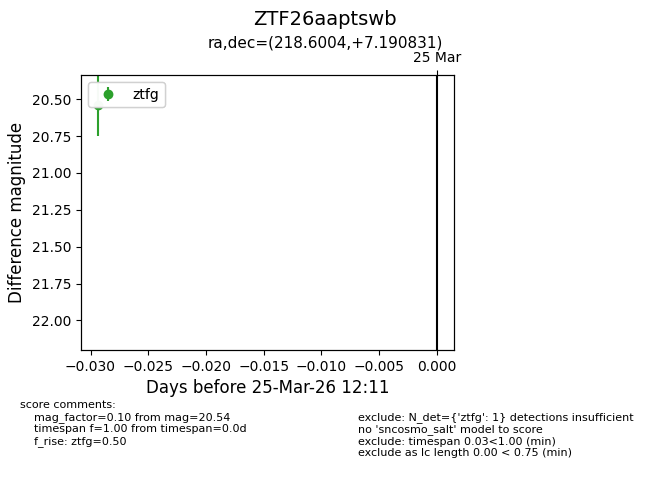
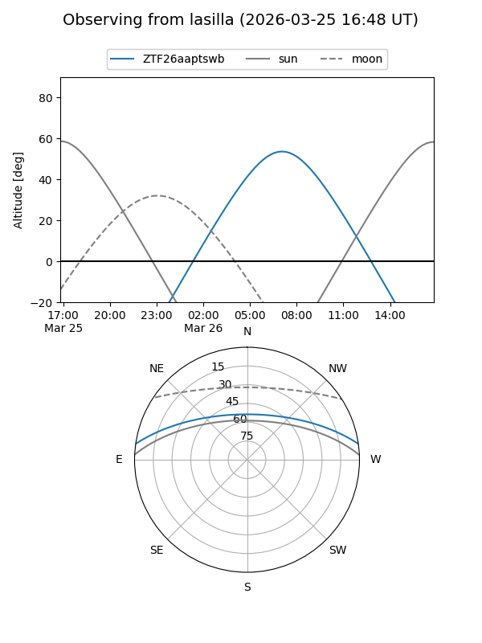
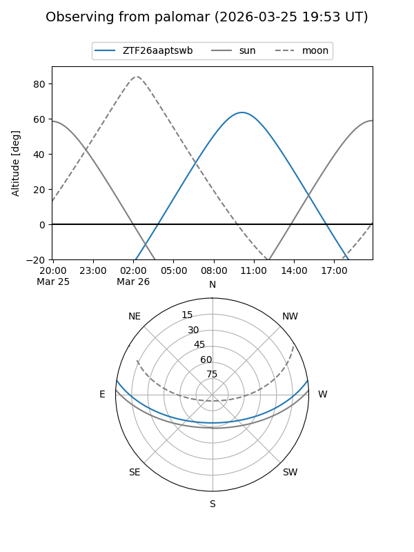

ZTF26aaptswb
Target ZTF26aaptswb at 2026-03-25 12:16
Aliases and brokers:
FINK: link
Lasair: link
ALeRCE: link
alt names
ZTF26aaptswb (ztf,fink_ztf)
Coordinates:
equatorial (ra, dec) = 218.6004,+7.19083
equatorial (HMS+DMS) = 14:34:24.10,+07:11:26.99
galactic (l, b) = (358.4355,+58.47849)
Flags:
Photometry:
last ztfg=20.54
1 ztfg detections
Lightcurve

Visibility


Additional plots